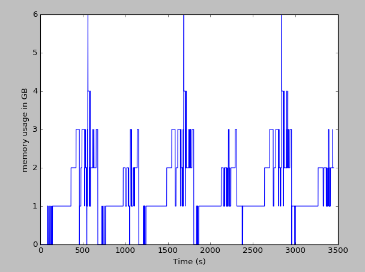
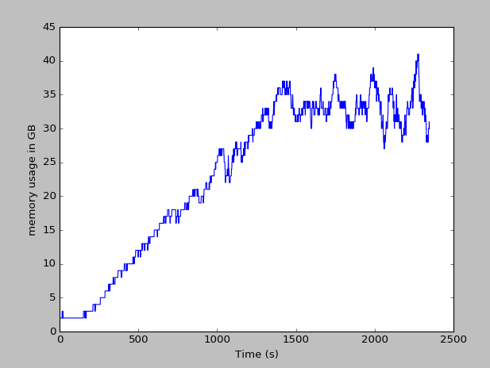
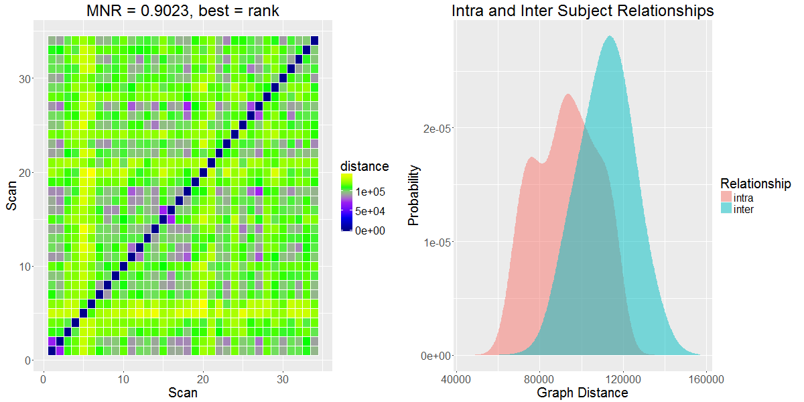
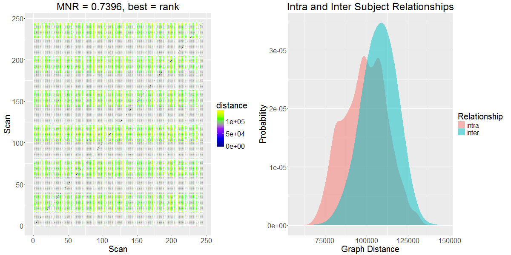
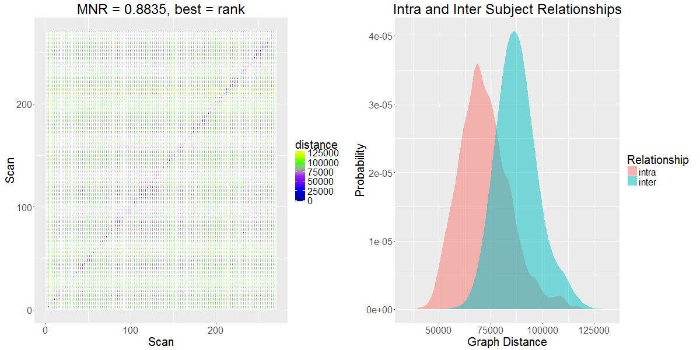

Design Team 0 Slides
Eric Bridgeford, Albert Lee, Eric Walker
FNGS pipeline leg overview
Eric Bridgeford
Week's Accomplishments
- Massive memory issue fixed
- Multivariate GMM exploration
- Lots of analyzed graphs/mnr statistics
- Redid all memory-related code to reflect more consistent understanding of analysis
Memory Related issue
- Problem: running large scale analysis was leading to HUGE memory problems
- Python fails to effectively clean itself up when dealing with very large jobs
- Never became a problem previously, because Greg uses bash scripts (termination at python session conclusion automatically frees memory)
- Primary offender: matplotlib leaves artifacts ALL OVER THE PLACE
- If anybody has memory issues relating to python scripts, I spent a long time debugging and can help ffr
Solving Memory Issues
- Multiprocessing module in python
- Allows for creation of external sessions for individual function calls, perfect for our usage
- IE, spawn individual sessions that automatically free their own memory at termination, instead of crappy python garbage collector
Serial Performance
- Running jobs serially leads to consistent memory usage (3 subjects run serially here)

Trivial to Upscale
- running jobs in parallel (30 scans shown here), can easily just spawn processes and stagger
- Could write something to automatically do this very simply

New Data analyzed
- Data analyzed with the version of the pipeline shown 2 weeks ago
- Comparisons are to same pipeline, without linear and quadratic drift removal (top) and with (bottom)
NKI, desikan


BNU1, desikan


BNU2, desikan

DC1, desikan


HNU1, desikan


Comments
- Pipeline looks awesome; mnrs are consistently great
- Benchmark against CPAC head to head this week for benchmark datasets?
- Direct comparison of mnrs, graphs produced, and memory information/runtime
Things to do this week
- finish fMRI variance repo
- write my own GMM code and test
- Do lots of ML tutorials
- use EM for estimating covariance matrices of sources for conditions given our input vec
- studying for GREs
Univariate Kalman Filter and Smoother
Eric Walker
This week
Link to R Markdown
Javascript Image Analysis
Albert Lee
Accomplished this week
- Developed code to test histogram equalization of slice by slice (useless as I'll explain later)
- Developed new sampling method that doesn't require the Clarity API
- Developed Code to sum the histograms of a 3D cube based off of Alex's code
- Tested different subsamples and subsampling methods
- Tested IBM Watson visualization
- Created NeuroCV github repo
Iterative Histograms
- Last week I found the histogram equalization of each slice and combined the slices
- This is improper technique as we are trying to find the histogram equalization of the whole volume not separate slices
- Iterative histograms is a different technique where you find the array dimensions and iteratively add the histograms accross the x y z axis
Challenges
- Iterative histograms are even more GPU intensive than slice by slice equalization
- Wasted a lot of time trying to downsample data to run the code on my 3GB laptop
- Clarity API and other packages difficult to install on linux
- A deeply subsampled (9, 6, 11) cube took several hours to process with Cortex's 18GB RAM
Challenges part 2
- After sampling an memap is created - this means nibabel is rendered useless for manipulations and I cannot convert back to .nii
- Due to my lack of understanding of interpolation my code might be deeply flawed
- Tried some manipulations with the Clarity API specifically with trying to turn the sampled array from into a nibabel friendly form however because nifti format is rather finicky when converting from array to nifti (at least with nibabel)
- In process of investigating alternative python based nifti image manipulation suites
Sampling Methods
- Random sampling with number generator (unreliable and ultimately uninformative)
- Proportional representation based on bin numbers (Difficult to implement in practice)
- Interpolation based estimation (Best method)
- Important consideration - Level 5 downsampling represents the greatest downsampled data available on the Neurodata server, additional downsamples are thus inherently unreliable
Interpolation based estimation
- Interpolation is the art of constructing new data points within a discrete range
- A very crude definition is "curve fitting" based on simple functions
- Similar to regression there is linear, exponential, etc.
- Experimented around however due to the lack of availability of a "check" model, I just chose to go with linear interpolation because it's the fastest
Interpolation based estimations pt 2
- What is the difference between sampling using interpolation of the zoom of an N size matrix and a simple downcale of the local mean
- Does higher order interpolation matter for our case
Logic of iterated histograms
- Take cube of data
- Find the dimensions thus creating your range parameters
- Sample using linear interpolation
- Over the sampled dimensions find the non zero points and iteratively add the histograms
- Construct the iterated histogram
- Normalize using basic histogram normalization
Issues still in the progress
- My method of converting back to a form involves creating an array of zeros based on the histogram of the data
- Next I use 32 as the bin size and divide each cell of the histogram by the hist_sum value
- I save the result as a csv file - however since I converted the 3D array into what is essentially a 2D representation of the histogram how do I convert back to either a 3D form
Steps taken to solve these problems
- Contacted the major clusters on campus - IDIES, MARCC, HPCC and asked if I could use a node of their cluster for free - No
- Constructed a small 3D array and tried the manipulations I was using - currently using results to help me debug
- Concern: Even a 2x2x2 (smallest reasonable volume) requires several hours to process
- Write it in C code? - probably not best use
NeuroCV Repo
- Stored Histogram equalization notes and all the various histogram equalization methods I've tested
- A lot of code is not included because it requires nifti raw data files which Github does not provide space for - I'll create pointers using Git lfs, but my cortex account has all the necessary files as well
- Jupyter notebook is partially filled out, but I need to figure out how to outsource the code - is there a nohup command for jupyter notebook? (To avoid hogging cortex for 12+ hours)
Next week
- Find way to prove my histogram equalization works - Problem: There are no 3D examples of histogram equalization on the web so difficult to prove
- Find way to improve processing time
- Ask Jovo for more stuff